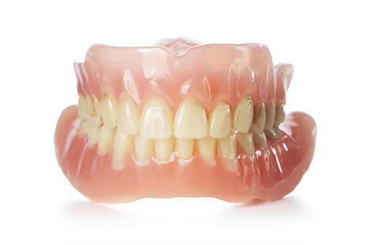

치아의 색이 변했어요.
건강한 미인의 조건으로 희고 가지런한 치아를 열거하고 있습니다. 사람에 따라 조건에 따라 다르게 보이므로 치아가 약간 누렇다고 걱정할 필요는 없습니다.
이가 누래요
치아의 색은 치아가 형성되는 시기에 결정되며, 일단 형성된 후에는 외부의 영향을 전혀 받지 않습니다. 보통의 건강한 치아의 겉층은 단단하면서 활택한 법랑질이므로 착색이 일어나지 않으므로 칫솔질을 잘 하면 없어집니다.
다친 후 치아색이 변했어요
넘어지거나 부딪히면 대개 앞니에 미세한 균열이 가거나치아의 일부가 부러지거나, 잇몸뼈에 골절이 일어나거나, 치아로 공급되는 혈관과 신경이 끊어져 피가 응고되어 시간이 지나면서 치아의 색이 검게 변하는 경우가 있습니다. 이 경우 치아 표백을 시술하면 효과가 좋습니다.
충치가 있으면 치아 색이 검어져요
앞니의 안쪽에 충치가 있는 경우 아프지는 않으나 치아 전체가 푸르스름하게 보입니다. 앞니는 잘 보이는 곳이어서 치료시기를 놓치는 경우가 드물지만 어금니는 치과의사가 아니라면 알 수 없으므로 충치가 많이 진행되어 통증이 심해진 후라야 치료를 받게 되는 일이 흔합니다. 그러므로 아픈 후 치과를 찾기 보다는 아프기 전 미리 정기검진을 해야 합니다.